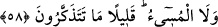
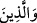

gerçekleştireceği yeni yaratışı inkâr edebiliyorlar!
“Fakat insanların çoğu” yâni kâfirler, ikinci kez yaratmanın ilk kez yaratmatkan daha
basit bir şey olduğunu “bilmezler.” Çünkü aşırı gafletlerinden ve hevâlarına uyup
durmaktan dolayı iyice düşünememekte, düşünmenin gereklerine yeterince sâdık
kalamamaktadırlar.
58. Körle gören, inanıp iyi amellerde bulunanla kötülük yapan bir olmaz. Ne
kadar az düşünüyorsunuz!
“Kör ile gören;” yâni gâfil ile basiret sâhibi… Körden maksad kalb gözü Allah’ın
âyetlerini görüp bunlardan istifade edemeyecek kadar kör olan, görenden maksad da
bunları görebilendir.
Şâir der ki:
Sen ey Süreyya’yı Süheyl’e nikâhlayan avanak!
Allah cezânı versin, bu yıldızlar nasıl buluşacak?!
Şam’da görünür Süreyyâ, tek başına göründüğünde;
Tek başına görünen Süheyl’se, görünür ancak Yemen’de.
Yani, bunlar arasında bir denklik bulunmadığı gibi, mü’minle kâfir ve âlimle câhil
arasında da yoktur.
“İnanıp iyi amelde bulunanla…” Dikkat edilirse, “gören”e yakın olması hasebiyle
“îman edenler” öne alınmış ki bu bir belâğat metodudur. Bunlarla iyilik yapan ihsân ehli
kasdedilmektedir. “Kötülük yapan bir olmaz.” “
”, kötülük yapanların tamamını
kapsayan bir ism-i cinstir. Mânâ; “İyilik yapanla kötülük yapan yâni sâlihle tâlih de bir
değildir” şeklindedir. Dolayısıyla aralarındaki farklılığı ortaya koyacak bir başka hâlin
daha olması kaçınılmazdır ki bu da kıyâmette yeniden dirilişten sonra gerçekleşecektir.
Bu, yeniden dirilişin ve hesâbın gerçekliğine dâir bir başka delildir. “Kötülük yapan”
zikredilirken “ne de” anlamında “ ” ifadesinin eklenmesi, ilgili lafızlar sebebiyle
cümle uzadığından ifâde etmek istediği benzemezliğin (nefy anlamının) pekiştirilmesi
içindir. Bir de esas maksadın, kötülük yapanın iyilik yapana denk olmadığını anlatmak
olduğundan dolayıdır. Çünkü iyilik yapan, kötülük yapanın müstahak olduğu hakirlik ve
değersizlikte ona denk olmadığı gibi, kötülük yapan da iyilik yapanın müstahak olduğu
lütuf ve ikramda ona denk değildir. “
”deki atıf vavı, sadece inanıp sâlih amel
işleyenleri değil, (kötülük yapanlarla beraber) her ikisini birden yukarıdaki “körle
gören” ifâdesine atfetmektedir. Bunların yâni gâfille basîretlinin toplamı iyilik yapanla